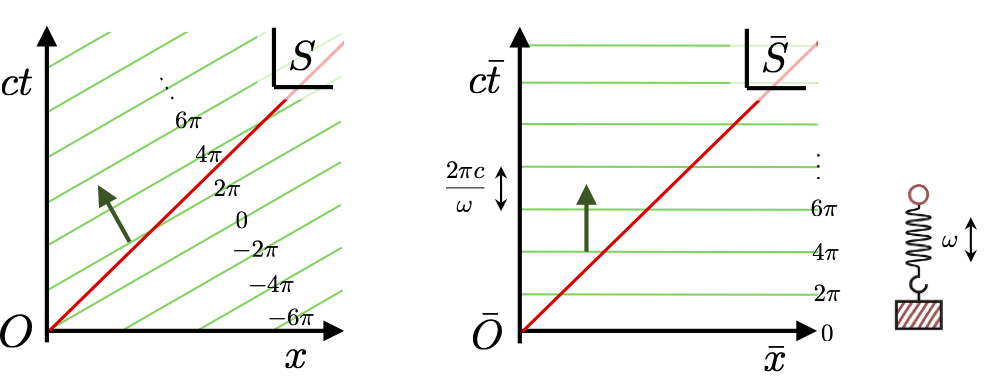
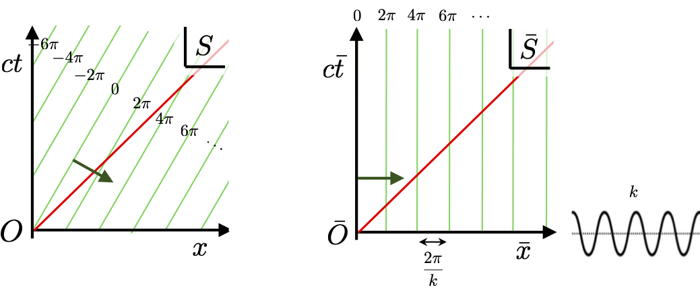
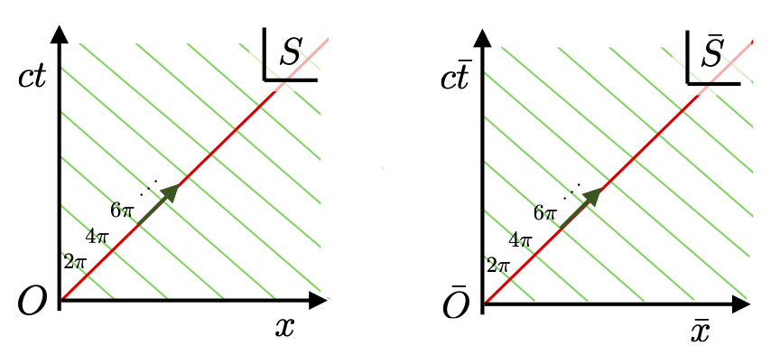
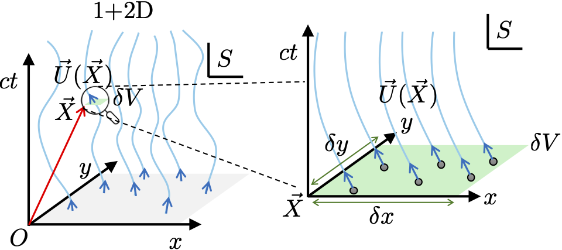
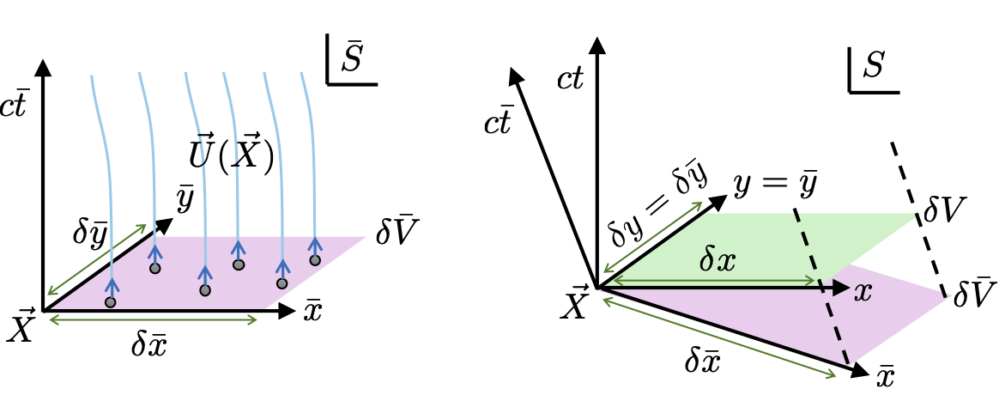
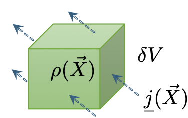

8 Plane-waves and particle flow
In this lecture we will explore core examples of scalar, 4-vector and tensor fields. What we will learn will greatly inform our analysis of field theories later.
8.1 Plane-wave scalar fields
Earlier in the Scalar-product and one-forms lecture we introduced a scalar field as a general Lorentz scalar functional of points in space-time \(\tilde{\varphi}(\vec{X})\) which in a given frame \(S\) is a function \(\varphi(x)\).
The requirement for \(\varphi(x)\) to be Lorentz scalar places restrictions on the form of the field. For example, if \(\varphi(x)\) depended only on the space-time coordinates \(x^\mu\) in \(S\) and nothing else, then it must be of the form \[ \varphi(x) = f(x_\mu x^\mu), \] where \(f(\cdot)\) is an arbitrary function, itself parameterised by Lorentz scalars coefficients. The reason for this is that the only Lorentz scalar we can form from \(x^\mu\) is the squared space-time interval \(\vec{X}\cdot\vec{X} = x_\mu x^\mu\).
More interesting cases arise when \(\varphi(x)\) is parameterised by additional covariant objects. Suppose \(\varphi(x)\) was defined by another 4-vector \(\vec{Q}\) with components \(q^\mu\) in \(S\). In this case we can construct three Lorentz scalars \(\vec{X}\cdot\vec{Q}\), \(\vec{X}\cdot\vec{X}\) and \(\vec{Q}\cdot\vec{Q}\) so in general \(\varphi(x)\) has a dependence \[ \varphi(x) = f(x_\mu q^\mu, x_\mu x^\mu, q_\mu q^\mu), \] where \(f(\cdot)\) is now an arbitrary 3-variable function.
We already know a form of field with this dependence – plane waves travelling with a wave speed of \(c\). They have the general form \[ \varphi(ct,{\boldsymbol{r}}) = a\, e^{i(\omega t - {\boldsymbol{k}}\cdot{\boldsymbol{r}})}, \] where \(a\) is a Lorentz scalar amplitude, \(\omega\) is the angular frequency and \(\boldsymbol{k}\) is the 3-wave-vector of the wave. If this plane-wave is to be a Lorentz scalar field then we need that the phase of the wave \[ \theta(x) = \omega t - {\boldsymbol{k}}\cdot{\boldsymbol{r}}, \] is a Lorentz scalar. Specifically, all inertial observers must agree on the value of the phase at a given point in space-time. The reason for this is that the “event” that the wave reached it maximum extent, or has a node, is something every observer can agree on. They won’t agree on the coordinates ascribed to this event, or the time elapsed and distance between pairs of such events, but they will agree that one occured a given point.
This tells us that \(\theta(x)\) must be a scalar-product between \(\vec{X}\) and another 4-vector. Or in otherwords we can the scalar \(\omega\) and 3-vector \(\boldsymbol{k}\) into a 4-wave-vector \(\vec{K}\) with components in some frame \(S\) as \[ k^\mu = \left(\begin{array}{c} \omega/c \\ {\boldsymbol{k}} \end{array}\right). \] This sensibly links \(\omega\) with the time component, and \(\boldsymbol{k}\) with the spatial components. Naturally both \(\omega\) and \(\boldsymbol{k}\) for a given wave differ between inertial frames as described by a standard Lorentz transformation \[ k^{\bar \nu} = \Lambda^{\bar \nu}_\mu k^\mu. \] This indicates that transforming between inertial frames mixes \(\omega\) and components of \(\boldsymbol{k}\). Using \(\vec{K}\) we can express a plane-wave in a covariant form \[ \varphi(x) = a\, e^{i k_\mu x^\mu}, \] recalling that \[ k_\mu = \left(\begin{array}{c} \omega/c \\ -{\boldsymbol{k}} \end{array}\right), \] so the scalar-product of the 4-wave-vector and the space-time 4-vector is \[ k_\mu x^\mu = (\omega/c)ct - {\boldsymbol{k}}\cdot{\boldsymbol{r}}. \] Consequently, the phase factor of the plane-wave is a Lorentz invariant, e.g. a Lorentz scalar linear functional, with the plane-wave itself given by its complex exponential \[ \tilde{\varphi}(\vec{X}) = a\, e^{i \vec{K}\cdot\vec{X}}, \] making explicit that it is also a Lorentz scalar (non-linear) functional of space-time \(\vec{X}\). We characterise the type of plane-wave by the Lorentz scalar \(\vec{K}\cdot\vec{K}\) which is \[ \vec{K}\cdot\vec{K} = k_\mu k^\mu = \left(\frac{\omega}{c}\right)^2 - {\boldsymbol{k}}\cdot{\boldsymbol{k}}. \] If \(k_\mu k^\mu > 0\) it tell us \(\vec{K}\) is time-like, if \(k_\mu k^\mu = 0\) then it is light-like, or if \(k_\mu k^\mu < 0\) it is space-like.
In 1+1D space-time the pattern of phases of a plane-wave with a time-like \(\vec{K}\) is shown below for some frame \(S\).

Since surfaces of constant phase obey \(\omega t - kx = {\rm const}\) then \[ x(t) = \left(\frac{\omega}{k}\right)t - {\rm const}. \] The phase velocity is the speed at which constant-phase hypersurfaces intersect an observer’s time axis. We can immediately identify this as \(v_p = \omega/k\). Given \(\omega^2/c^2 - k^2 >0\) for time-like \(\vec{K}\) then we see that \(\omega^2/k^2 > c^2\) so \(|v_p| > c\). Time-like 4-wave-vectors necessarily correspond to superluminal phase velocities in frames where \(k \neq 0\). This is not an issue since the phase velocity is not a signal velocity. No information or energy is carried by the phase.
Being time-like means we can always find an inertial frame \(\bar S\) in which \(\vec{K}\) points directly along its \(c{\bar t}\) axis. What we now have is a series of constant phase hypersurfaces which are parallel to the \(\bar x\) axis. The plane-wave reduces to a wave number \(\bar k = 0\) and oscillates in time only with \(\bar \omega\), so all points of space are filled with perfectly synchronised simple harmonic oscillators.
Conversely if we have a space-like 4-wave-vector \(\vec{K}\), so \(k_\mu k^\mu < 0\), then we can always find an inertial frame \(\bar S\) in which \(\vec{K}\) points directly along its \(\bar x\) axis. This gives a series of constant phase hypersurfaces which are parallel to the \(c {\bar t}\) axis. The plane-wave in \(\bar S\) corresponds to a frozen spatial modulation fixed for all time.

Space-like \(\vec{K}\) obey \(\omega^2/c^2 - k^2 <0\) so their phase velocity is \(|v_p| < c\). The final case is for \(\vec{K}\) being lightlike. Here \(\vec{K}\) points along the lightcone and the hyperplanes of constant phase also lie along an opposite direction lightcone in 1+1D as shown here.

Transforming to a new frame does not change this picture. Light-like plane-wave reflect the causal structure of space-time itself. As we shall see next, solutions to the wave-equation are plane-waves with light-like 4-wave-vectors.
8.2 Wave-equation
In the Scalar-product and one-forms lecture we also constructed one of the most important one-forms, the derivative \[ \partial_\mu = \left(\begin{array}{c} \frac{1}{c}\frac{\partial}{\partial t} \\ \nabla \end{array}\right). \tag{8.1}\] When this is contracted with its 4-vector equivalent \(\partial^\mu\) it gives the d’Alembert Lorentz scalar differential operator \[ \partial_\mu\partial^\mu = \frac{1}{c^2}\frac{\partial}{\partial t^2} -\nabla^2. \] If we apply this to a scalar field \(\varphi(x^\mu)\) we arrive at the wave-equation \[ \partial_\nu\partial^\nu \varphi(x) = 0. \tag{8.2}\] This is our canonical example of a relativistically covariant equation of motion governing a field. In the next lecture we will see how the Lagrangian formalism you learnt in the first half of this course will allow us to build field theories and derive equations of motion like the wave-equation.
Here we will take Equation 8.2 as given and examine what its solutions look like. The solutions are plane-waves. In a given frame \(S\) let’s carefully compute the derivative of the plane-wave starting with the expression \[ \partial_\mu e^{i \theta(x)} = \partial_\mu \theta(x) \, \frac{{\rm d}}{{\rm d}\theta(x)} e^{i\theta(x)} = ie^{i\theta(x)} \partial_\mu \theta(x) \] so using the phase \(\theta(x) = k_\nu x^\nu\) we get \[ \partial_\mu e^{i k_\nu x^\nu} = ik_\nu\left(\frac{\partial}{\partial x^\mu} x^\nu\right)e^{i k_\sigma x^\sigma} = ik_\nu \delta^\nu_\mu e^{i k_\sigma x^\sigma} = ik_\mu e^{i k_\sigma x^\sigma}. \] Similarly, since \(k_\nu x^\nu = k^\nu x_\nu\) (index see-sawing) we have \[ \partial^\mu e^{i k_\nu x^\nu} = ik^\nu\left(\frac{\partial}{\partial x_\mu} x_\nu\right)e^{i k_\sigma x^\sigma} = ik^\nu \delta_\nu^\mu e^{i k_\sigma x^\sigma} = ik^\mu e^{i k_\sigma x^\sigma}. \] Putting this together we get \[ \partial_\mu\partial^\mu \varphi(x) = (ik^\mu)(ik_\mu)\varphi(x) = -k_\mu k^\mu \varphi(x) = 0. \] Given the plane-wave \(\varphi(x) \neq 0\) unless its amplitude \(a = 0\) it can only be a general solution to the wave-equation if \(k_\mu k^\mu = 0\). Hence the 4-wave-vector must be a lightlike 4-vector.
This implies that the wave solutions to the wave-equation are controlled by the dispersion relation \[ k_\mu k^\mu = \left(\frac{\omega}{c}\right)^2 - \boldsymbol{k}\cdot\boldsymbol{k} = \left(\frac{\omega}{c}\right)^2 - |\boldsymbol{k}|^2 = 0, \tag{8.3}\] or more compactly \[ \omega = \pm c|\boldsymbol{k}|. \] If we applied the Einstein-Planck relation \(\mathcal{E} = \hbar\omega\) and the de-Broglie relation \(\boldsymbol{p} = \hbar\boldsymbol{k}\) embodying wave-particle duality in quantum mechanics then we see that the dispersion relation Equation 8.3 becomes \(\mathcal{E}^2 = p^2c^2\). This is the relativistic energy-momentum relation for a massless particle and consistent with the fact that plane-wave solutions of the wave-equation have a wave speed of \(c\).
Consider the modified wave-equation \[ \left(\partial_\nu\partial^\nu + \alpha\right)\varphi(x) = 0, \tag{8.4}\] where \(\alpha>0\) is a Lorentz scalar. Inserting a plane-wave into Equation 8.4 now gives \[ \left(-k_\mu k^\mu + \alpha\right)\varphi(x) = 0. \] and so plane-wave solutions require that \(k_\mu k^\mu = \alpha > 0\), meaning they have time-like 4-wave-vector. Identifying \(\alpha = m^2c^2/\hbar^2\) makes Equation 8.4 the Klein-Gordon equation describing particle with mass \(m>0\). The dispersion relation then becomes \[ (\hbar\omega)^2 = |\hbar\boldsymbol{k}|^2c^2 + m^2c^4, \quad \implies \quad \mathcal{E}^2 = p^2c^2 + m^2c^4, \tag{8.5}\] and hence obeys the relativistic energy-momentum relation for a massive particle. It is worth contrasting that plane-waves with space-like 4-wave-vectors are not solutions to any causal, stable relativistic wave equation. They do not describe propagating waves and instead arise as solutions of Poisson type equations.
8.3 Field describing a fluid
Fields don’t have to be Lorentz scalar, they can be any covariant object such as a 4-vector \(\vec{A}(\vec{X})\) or tensor \(\pmb{\symbb{T}}(\vec{X})\). The field is now described by components in a given frame, e.g. \(A^\mu(x)\) or \(T^{\mu\nu}(x)\), and their value at any given point in space-time does not have to be agreed upon by all observers. Instead the components of the field should transform appropriately between frames as \[ A^{\bar \mu}({\bar x}) = \Lambda^{\bar \mu}_\nu A^\nu(x), \quad T^{\bar{\mu}\bar{\nu}}({\bar x}) = \Lambda^{\bar \mu}_\sigma \Lambda^{\bar \nu}_\kappa T^{\sigma\kappa}(x). \] An inituitive example of a 4-vector field is to imagine space is filled with a continuous fluid of particles and \(\vec{U}(\vec{X})\) represents the 4-velocity of all particles inside an infinitesmal volume around the point \(\vec{X}\). Being a 4-velocity means that it obeys \[ \vec{U}(\vec{X})\cdot\vec{U}(\vec{X}) = 1, \quad \forall \vec{X}. \] In 1+2D space-time we can imagine there is a strained spaghetti of worldlines (strained so they are not tangled up) which varies smoothly across space and time. The 4-velocity field \(\vec{U}(\vec{X})\) is then the tangent to the worldline at a given point as shown here:

The picture shows a small “volume” element for 2D \(\delta V = \delta x\delta y\) at a point \(\vec{X}\). Since \(U(\vec{X})\) varies smoothly all the particles (six drawn) inside the volume element at \(\vec{X}\) necessarily have the same 4-velocity. In general for frame \(S\) this 4-velocity will describe particles moving through space and time. Since the particles are massive the 4-velocity is time-like and so there exists another frame \(\bar S\) in which it points along its \(c\bar t\)-axis. This is the momentarily comoving reference frame for the particles at \(\vec{X}\), so the particles in the volume element are now stationary, as shown here:

A volume element in a given frame is a small hypersurface of constant time in that frame. However, different inertial frames do not agree on the notion of simultaneity so the volume element \(\delta \bar V\) in \(\bar S\) is not a hypersurface of constant time in frame \(S\). As shown above \(\delta \bar V\) viewed in frame \(S\) is tilted in the \(ct\) and \(x\) axes. So if we take \(\delta V\) as the hypersurface of constant time swept out by \(\delta \bar V\) in frame \(S\) then it will experience length contraction so the volumes are related as \[ \delta x = \frac{\delta \bar x}{\gamma} \quad \implies \quad \delta V = \frac{\delta {\bar x}\delta {\bar y}}{\gamma} = \frac{\delta \bar V}{\gamma} \] where \(\gamma\) connects frames \(S\) and \(\bar S\) and using that \(\delta y = \delta \bar y\), since the relative motion between the frames is along the \(x\)-axis. Hence the volume in any other frame \(S\) obeys \(\delta V < \delta \bar V\).
Now suppose we have a certain number of particles \(N\) ( = 6 in the figure above) contained in the volume element \(\delta \bar V\) in the comoving frame \(\bar S\). The number density of particles at \(\vec{X}\) in frame \(\bar S\) is then \[ \rho_0(\vec{X}) = \frac{N}{\delta \bar V}. \] The following important observation applies:
\(\Big(\)# of particle in comoving frame’s \(\delta {\bar V}\)\(\Big)\) = \(\Big(\)# of particle in \(\delta V\) of any other frame \(\Big)\)
The reason for this is that the boundaries of the comoving volume \(\delta \bar V\) from frame \(\bar S\) sweeping through space-time in \(S\) is, by construction, parallel to the worldlines of the particles contained within it. As such none will cross the boundary guaranteeing that all the particle worldlines will cross the hypersurface \(\delta V\) in any frame \(S\). Consequently the density at \(\vec{X}\) in frame \(S\) is \[
\rho(\vec{X}) = \frac{N}{\delta V}, \quad \implies \quad \rho(\vec{X}) = \gamma\rho_0(\vec{X}),
\tag{8.6}\]
showing that the density in any other frame \(S\) increases compared to the comoving frame \(\bar S\). The density of particles \(\rho(\vec{X})\) is therefore not a Lorentz scalar, however the comoving density \(\rho_0(\vec{X})\) can be treated as such. Like the proper time it is a property that is intrinsic to the fluid itself. Therefore all observers of that system can determine and agree upon \(\rho_0(\vec{X})\) making it an effective Lorentz scalar since it does not transform between observers.
8.4 Particle current density and the continuity equation
For a non-relativistic fluid with density \(\rho({\boldsymbol{r}},t)\) and 3-velocity field \({\boldsymbol{v}}({\boldsymbol{r}},t)\) then we can form a 3-current density field as \[ {\boldsymbol{j}}({\boldsymbol{r}},t) = \rho({\boldsymbol{r}},t)\,{\boldsymbol{v}}({\boldsymbol{r}},t). \] From this computing \({\boldsymbol{j}}({\boldsymbol{r}},t)\cdot d {\boldsymbol{A}}\) gives the flux of particles crossing an area \(d {\boldsymbol{A}}\) per unit time. The relativistic generalisation of this quantity is the 4-current density \[ \vec{j}(\vec{X}) = \rho_0(\vec{X})\vec{U}({\vec X})c. \tag{8.7}\] We have to include a factor of \(c\) to ensure the correct units since \(\vec{U}({\vec X})\) is dimensionless. Since \(\vec{j}(\vec{X})\) is constructed from Lorentz scalars multiplying a 4-vector field \(\vec{U}({\vec X})\) then it is also a genuine 4-vector field.
Evaluating the 4-current density in the comoving frame \(\bar S\) at \(\vec{X}\) we get \[ j^{\bar \mu}(\vec{X}) = \rho_0(\vec{X})c\left(\begin{array}{c} 1 \\ 0\\ 0\\ 0 \end{array}\right), \] Since frame \(S\) is travelling \({\boldsymbol{v}}(\vec{X})\) relative to \(\bar S\) then we can write the 4-current density in \(S\) as \[ j^{\bar \mu}(\vec{X}) = \rho_0(\vec{X})c\left(\begin{array}{c} \gamma \\ \gamma{\boldsymbol{v}}(\vec{X})/c\end{array}\right) = \left(\begin{array}{c} \gamma \rho_0(\vec{X})c \\ \gamma \rho_0(\vec{X}){\boldsymbol{v}}(\vec{X})\end{array}\right) = \left(\begin{array}{c} \rho(\vec{X})c \\ \rho(\vec{X}){\boldsymbol{v}}(\vec{X})\end{array}\right), \] after identifying the density \(\rho(\vec{X})\) in frame \(S\). The general form for a 4-current density is then \[ j^{\bar \mu}(\vec{X}) = \left(\begin{array}{c} \rho(\vec{X})c \\ {\boldsymbol{j}}(\vec{X})\end{array}\right), \tag{8.8}\] where \({\boldsymbol{j}}(\vec{X})\) is the 3-current density.
For low energies (below pair creation) we expect the conservation of particle number for the fluid. This means that any frame \(S\) the flux of particles into and out of the frame’s volume element \(\delta V\) described by \({\boldsymbol{j}}({\boldsymbol{r}},t)\) controls the rate of change of density \(\rho({\boldsymbol{r}},t)\) in that volume.

This conservation is described by the continuity equation \[ \frac{\partial}{\partial t}\rho({\boldsymbol{r}},t) + \nabla \cdot {\boldsymbol{j}}({\boldsymbol{r}},t) = 0, \tag{8.9}\] familiar from electromagnetism. This equation has a very elegant relativistic form. Using Equation 8.1 and Equation 8.8 then Equation 8.9 reduces to \[ \partial_\mu j^\mu(\vec{X}) = 0. \] Whenever the 4-current field \(j^\mu(\vec{X})\) describes the flow of a conserved quantity then it will have zero 4-divergence. In the next part of the course we will repeatedly encounter the continuity equation in this form describing numerous different physical quantities.
8.5 Energy current
A key quantity to consider carefully is the energy/mass density. Considering Equation 8.7 one might envisage that energy 4-current density could be given by \[ j^{\bar \mu}_{\rm matter}(\vec{X}) \overset{?}{=} mc^2\rho_0(\vec{X})\vec{U}({\vec X}). \] Evaluating it in the comoving frame \(\bar S\) gives \[ j^{\bar \mu}_{\rm matter}(\vec{X}) \overset{?}{=} \left(\begin{array}{c} mc^2\rho_0(\vec{X}) \\ 0\\ 0\\ 0 \end{array}\right), \] where we see that the time component is indeed the energy density. However, if we transform this 4-vector into another frame \(S\) as \[ j^{\nu}_{\rm matter}(\vec{X}) = \Lambda^\nu_{\bar \mu} j^{\bar \mu}_{\rm matter}(\vec{X}), \] then we get \[ j^{\mu}_{\rm matter}(\vec{X}) \overset{?}{=} \left(\begin{array}{c} \gamma mc^2\rho_0(\vec{X}) \\ \gamma m c \rho_0(\vec{X}) {\boldsymbol{v}}(\vec{X}) \end{array}\right). \] which is incorrect because \(\gamma mc^2\rho_0(\vec{X})\) is not the energy density in frame \(S\).
In frame \(S\) each particle has energy \(\gamma mc^2\) and there is a density \(\rho(\vec{X})\), so the energy of the volume element \(\delta V\) is \(\mathcal{E}(\vec{X}) = \gamma mc^2\rho(\vec{X})\delta V\). Writing this in terms of the comoving density using Equation 8.6 then gives \(\mathcal{E}(\vec{X}) = \gamma^2 mc^2\rho_0(\vec{X})\delta V\). Crucially, we see that it has a factor of \(\gamma^2\), one from the relativistic energy and one from the density enhancement by length contraction. No 4-vector quantity can ever acquire a factor of \(\gamma^2\) via a Lorentz transformation.
What this observation tells us is that energy density must instead be a component of a rank-2 tensor field. This is the stress-energy tensor \(\pmb{\symbb{T}}(\vec{X})\). To finish up let’s consider the simplest possible example – the stress-energy tensor of “dust” given by \[
\pmb{\symbb{T}}_{\rm dust}(\vec{X}) = mc^2\rho_0(\vec{X})\vec{U}({\vec X})\otimes\vec{U}({\vec X}).
\] In a general frame \(S\) it has components \[
T^{\mu\nu}_{\rm dust}(\vec{X}) = mc^2\rho_0(\vec{X})U^\mu({\vec X})U^\nu({\vec X}),
\]
which in the comoving frame \(\bar S\) gives a very simple form \[
T^{{\bar \mu}{\bar \nu}}_{\rm dust}(\vec{X}) = \left(\begin{array}{cccc} mc^2\rho_0(\vec{X}) & 0 & 0 & 0 \\
0 & 0 & 0 & 0 \\
0 & 0 & 0 & 0 \\
0& 0 & 0 & 0 \end{array}\right),
\tag{8.10}\] with the energy density as the time-time component \(T^{00}\). Transforming this tensor into frame \(S\) travelling \({\boldsymbol{v}} = -v{\boldsymbol{e}}_x\) relative to \(\bar S\) gives \[
T^{\mu\nu}_{\rm dust}(\vec{X}) = \left(\begin{array}{cccc} \gamma^2 mc^2\rho_0(\vec{X}) & \gamma^2 mvc\rho_0(\vec{X}) & 0 & 0 \\
\gamma^2 mvc\rho_0(\vec{X}) & \gamma^2 mv^2\rho_0(\vec{X}) & 0 & 0 \\
0 & 0 & 0 & 0 \\
0 & 0 & 0 & 0 \end{array}\right),
\tag{8.11}\] and we now see that the \(T^{00}\) component transforms correctly such that it continues to be the energy density in any inertial frame. We will unpack more about the physics of \(T^{\mu\nu}\) later.